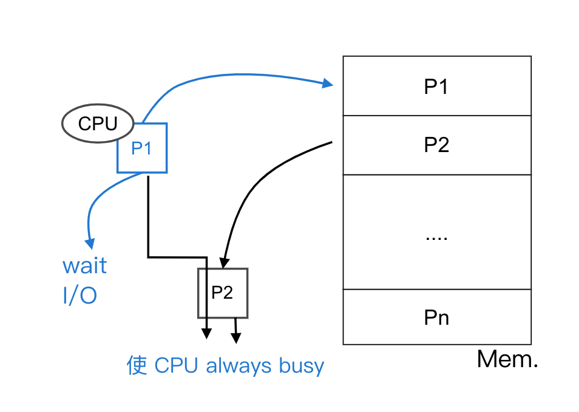
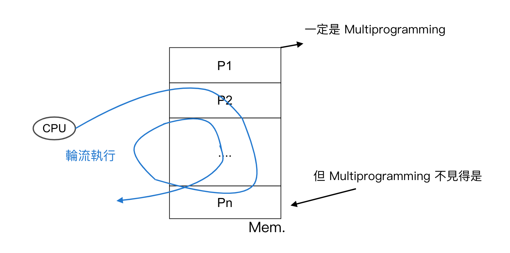
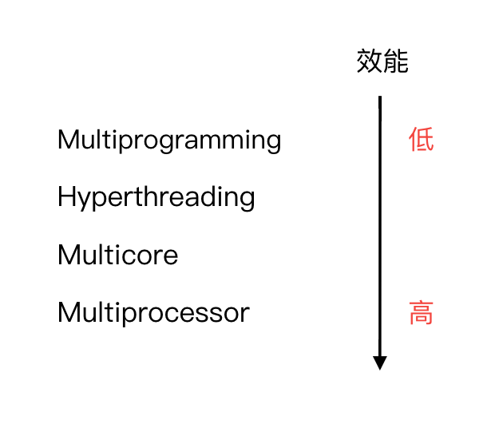
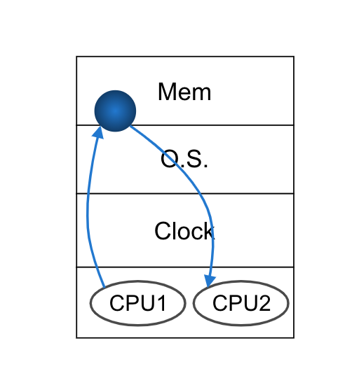
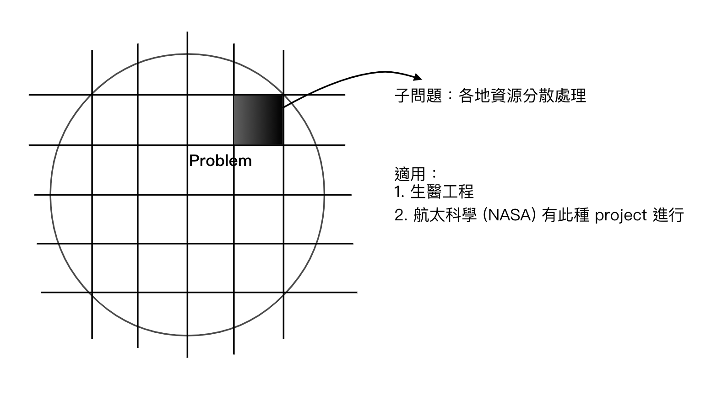
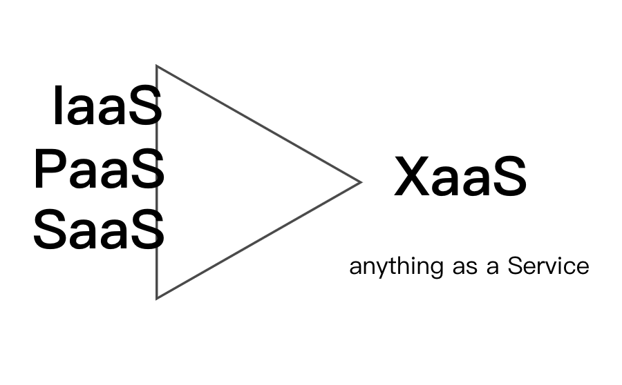
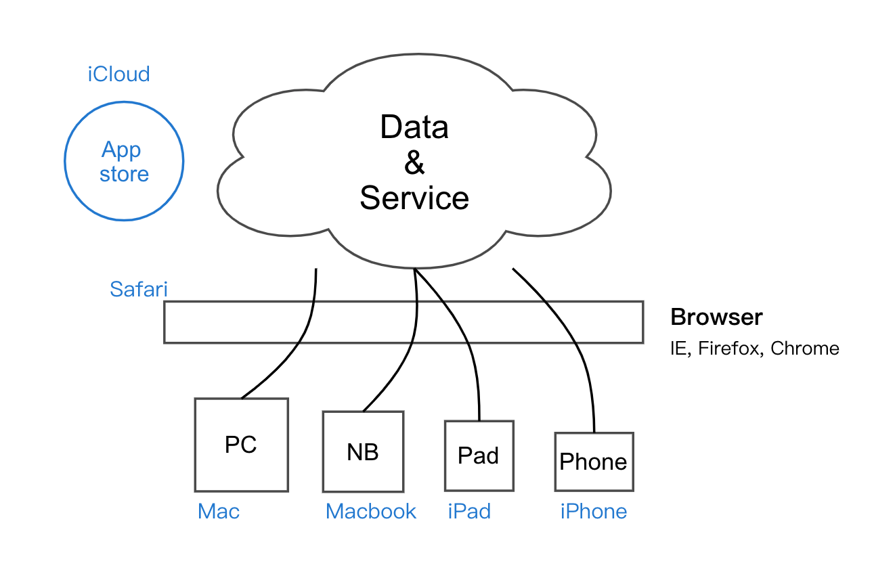
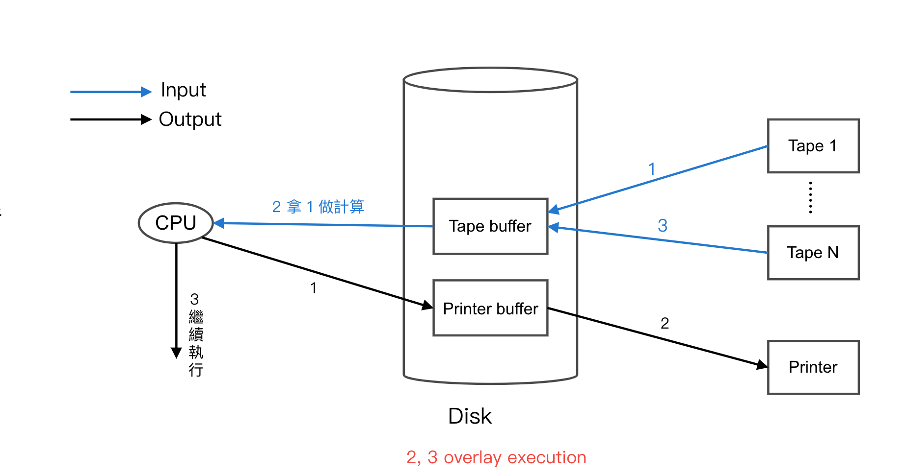
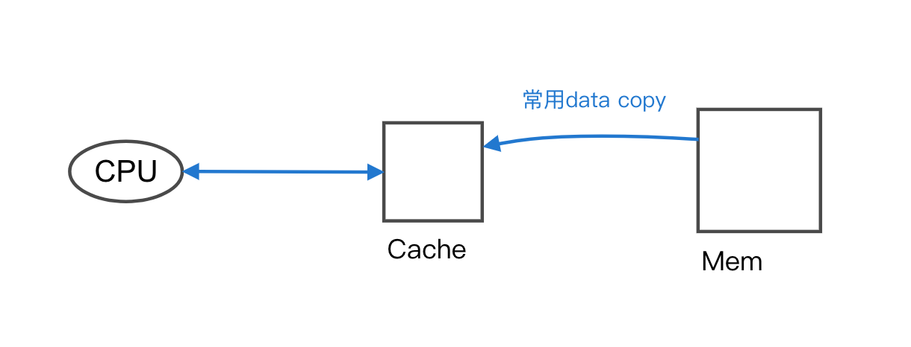
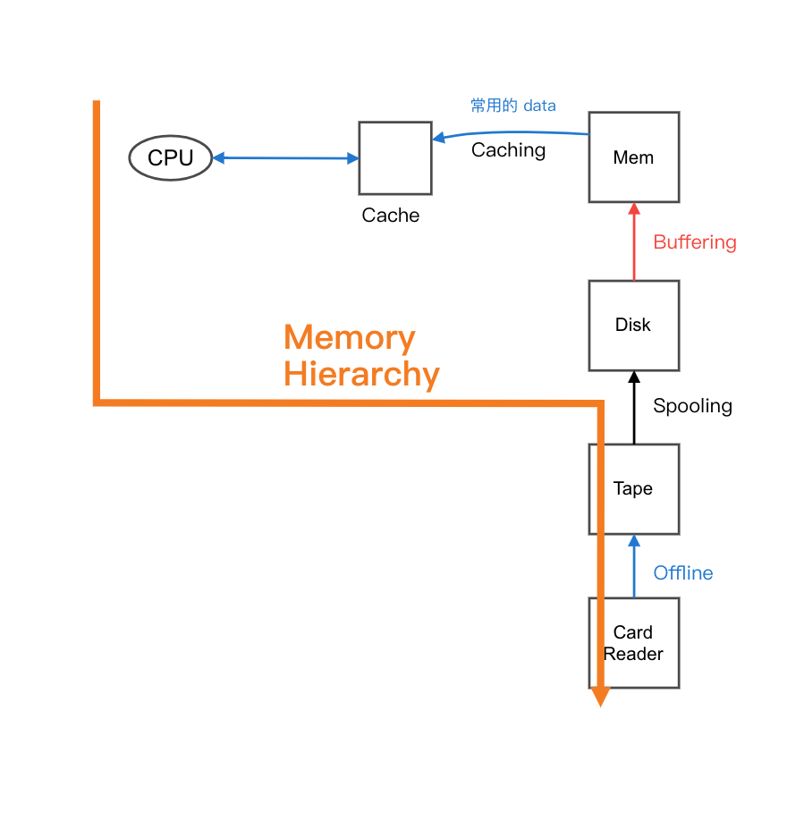

3.1 作業系統
O.S. 作用
- 為 user 和 Hardware 間溝通的橋樑
- 提供一個易於執行的環境 ex: Dos -> Windows
- 資源 (Hardware) 的分配及管理
- 避免為和系統的動作發生
作業系統型態
-
Multiprogramming (多元程式規劃)
Def: 指將多個 process 同時載入 memory 中- 以並行或平行方式處理
- 當一 process 需 wait I/O, CPU 得交由另一 process 使用
- 圖：
-
Time sharing (分時系統)
Def:-
採 Round Robin CPU Scheduling 及資源共享的技術
-
各 process 可輪流使用一固定的 CPU 時間
-
適用於 interactive system
-
可達到 Multitasking 之效
-
圖：
-
Note:
- interactive (交談式) => Online (線上作業), ex: game, FB, ptt
注重：公平性, 反應時間, 互動性
單工：一次只處理一個工作, 結束才換下一個, ex: 早期的 Dos 系統
多工(Multitasking)：一次可同時(以並行或平行的方式)執行多個工作, 利用 Time-sharing 達成
ex: Unix- Batched System (批次系統) => offline
將同質性的作業收集, 於一特定時間在統一處理, ex: 會計帳
- interactive (交談式) => Online (線上作業), ex: game, FB, ptt
-

-
-
Multiprocessor (多處理系統) => 平行系統
Def: 指一電腦內有多顆 processor, 如此可同時執行多個工作(以平行方式), 但不一定能減少每個 process 使用 CPU 的時間
特色：- 各 processor 受相同的 O.S., Clock 控制, 並共用 Memory space
- processor 之間溝通 => "Shared Memory"
- 為 tightly coupled (緊密, 耦合)的架構 => 一個掛, 全掛

-
Distributed System (分散式系統)
-
特色：
- 各 process 有專屬的 O.S., Clock, Memory 等資源
- Process 間的溝通採 "Message passing"
- 為 loosely coupled (鬆散, 耦合) system
-
Why Distributed System?
- Speed up
- Resource sharing
- Communication
- Fault tolerant (容錯性) => reliability 高 (可靠性)
-
Network Computing
Clustered System (叢集式)
Def:
- 類似平行系統, 可同時執行多個工作
- But 一般採用 "LAN 將多台 Host 連結", 形成一大型的服務網路
- 圖：

- 可達：
- Load Balance (負載平衡)
- High Availability (HA 高可用性)
- Fault Tolerant
Grid Computing (網格計算)
Def:
- 利用世界各地分享的資源來共同完成一大型任務
- 利用將問題切成多個 subproblem, 並分散給各地資源處理, 以求快速求解
缺點：難以普及 (需專家才有辦法對巨大問題分割)
圖：
Cloud
Def:
- data & service in the cloud
- accessiable with any device
- ingeneral device will use browser to connect into cloud
特色： - user "just use", 不需做
- 系統具強大的可擴充性 (scalability)
Cloud 衍生的服務 - 圖：
Compare
Des Grid Cloud 領導 學術界 Service provider 標準 有 無 特性 一次處理巨大的量 一次量少, 頻率極高 Open source 完全 部分開放 圖：
-
-
Real-time System (即時系統)
Def: 對工作的即時性要求極高, 若不能在指定時間內完成, 就算失敗
指定時間內 => 為精準掌控時程, 一般較少採用輔助儲存裝置(ex: disk, tape) No disk, no virtual memory, tape 為 secondary storage
可分為：- Hard R.T. => 即為上述
- Soft R.T. => 需滿足
- 具 priority scheduling
- 具 preemptive 之特色
- 降低 kernel 的處理時間
-
Handheld System (手持系統)
Def: 於手持裝置上執行之系統, ex: smart phone, PDA, Pad
限制：1. Speed 較慢 2. Memory space 較小 3. Monitor 較小 -
Embedded System (嵌入式系統)
Def: 指開發出的系統, 並非在一般 PC 執行, 而是嵌入 3C 家電等裝置中, 使其具智慧化的效果
作業系統演進
-
Offline (離線作業)
Def: 指藉由系統的離峰時間, 將 data 先行載入到高速 device, 使 CPU 之後可從此取得 data
=> CPU utilization(使用率) 上升, CPU idle time 下降, 系統 performance 上升 -
Spooling (電腦週邊同步連線作業)
Def: 利用高速 device (disk), 存方低速 device (tape) 的 data 使 CPU idle time 下降, 且於 Spooling 中 "可共用 I/O device 之資源"
圖： -
Buffering (緩衝)
Def:- 用以解決速度不對等的問題
- 一般會在高速 device 切一暫存空間當低速 device 的緩衝區, 如此 CPU 可直接面對高速 device 即可
-
Spooling vs Buffering
Spooling 自身的 CPU 計算可和其他工作的 I/O 運作重疊執行
Buffering 自身的 CPU 計算只可和自身的的 I/O 運作執行
Note: 實際上 buffering 中 上圖 (2), (3) overlay execution 不易達成, 所以 job 可分成 I/O bound job, CPU bound job -
Compare
I/O Bound CPU Bound 需大量運作, 少量的 CPU 計算 相反 Speed 受限於 I/O device 的效能 Speed 受限於 CPU 的效能 Input: CPU 常面對空的 Buffer Input: I/O device 常面對滿的 Buffer Output: CPU 常面對滿的 Buffer Output: I/O device 常面對空的 Buffer -
Caching (快取)
Def: 將常用的 data 複製一份到高速 device 中以提高 CPU 存取的 I/O 效能, 可以加速 CPU 資料存取時間
圖： -
回寫策略
Write-through Write back Cache 一更動, 馬上寫回 當 cache 的 data 須搬離 cache 之後再將之寫回 優點：Cache, memory 之間的 data 保持一致性 優點：Speed 較快 缺點：Speed 不佳 缺點：Cache, memory 的 data 可能不一致
Summary
